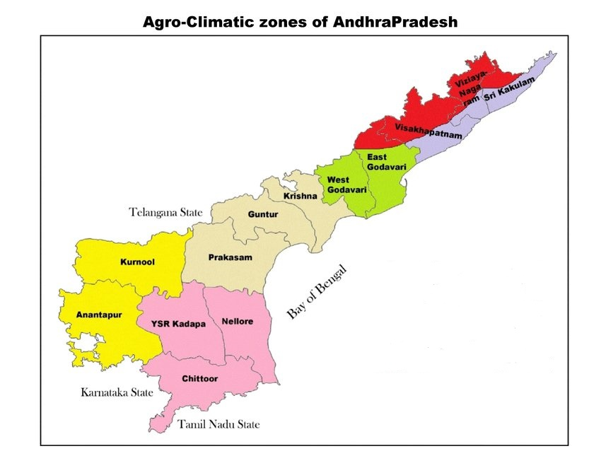

Select The Zones
Zones In Andhra Pradesh
North Coastal Zone
Godavari Zone
Krishna Zone
Southern zone
Scarce Rainfall Zone
High Altitude & Tribal Area

1.North Coastal Zone
(Part Of-
1 .Visakhapatnam 2.Viziayanagaram 3.Sri Kakulam)
2.Godavari Zone
(1.West Godavari 2.East Godavari)
3.Krishna Zone
(1.Prakasam 2.Guntur 3.Krishna)
4.Southern zone
(1.YSR Kadapa 2.Nellore 3.Chittoor)
5.Scarce Rainfall Zone
(1.Kurnool 2.Anantapur)
6.High Altitude & Tribal Area
(Some Part Of
1.Visakhapatnam 2.Viziayanagaram
)